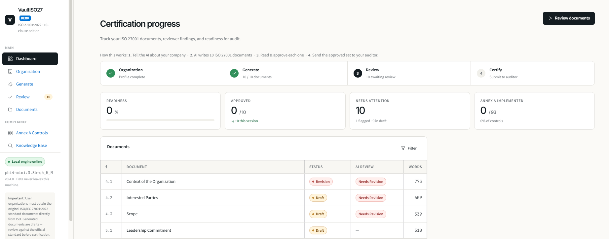
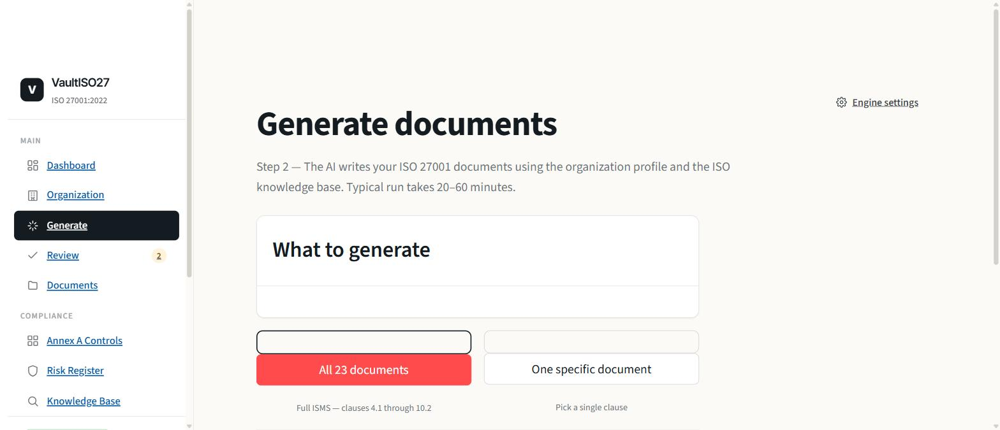
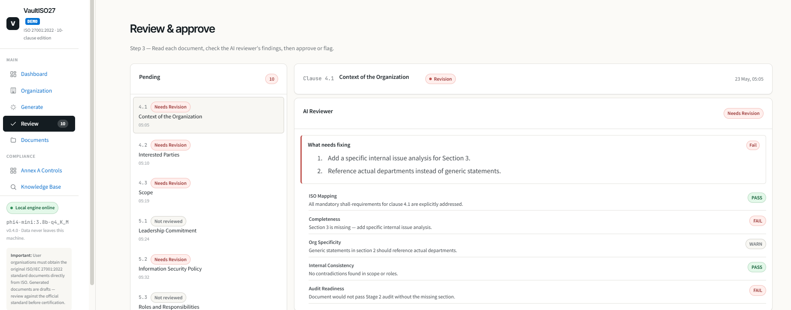
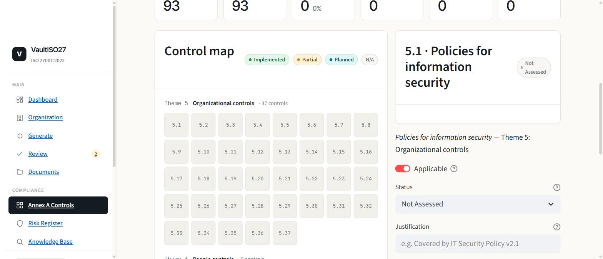

VaultISO27 drafts all mandatory ISO 27001 clauses using a local language model — no cloud, no API keys, your data never leaves the machine.

10 clauses generated · AI Reviewer found issues · Ready for human review
Enter your org name, sector, locations, departments, key personnel — or upload an existing profile document for LLM extraction.
phi4-mini drafts each clause using your profile and a RAG knowledge base built from ISO 27001 control descriptions.
qwen2.5 AI Reviewer scores each draft against 5 ISO dimensions. Approve or flag for revision with notes.
Export approved documents to Word (.docx), download the full set as a zip, and hand to your auditor.



Sending your org profile — asset registers, supplier lists, risk register, key personnel — to a SaaS platform to generate compliance documents is a control failure before the audit starts. VaultISO27 runs entirely on your hardware. Nothing leaves.
VaultISO27 is source-available and free for internal use. The tool does the drafting in 20–60 minutes on hardware you already own. You spend your budget on reviewing the output, not generating it.
2 GB VRAM — e.g. NVIDIA MX230 — is sufficient for the default model. The tool detects your RAM and VRAM at launch and recommends the right model automatically.
Tool detects your RAM and VRAM (NVIDIA, AMD, Intel) at install and picks the model speed-first: a generator only qualifies for a tier if it fits that tier's VRAM, or is small enough to run at usable speed on CPU+RAM. A bigger model that spills out of VRAM runs 5–10x slower — never recommended. High-VRAM tiers get Gemma 4 (Google, 2025).
| Tier | Condition | Generator model | Size | ≈ per document |
|---|---|---|---|---|
| High-end | 12 GB+ VRAM | gemma4:12b-it-qat |
7.2 GB | ~1–2 min |
| Mid-range | 6–12 GB VRAM | gemma4:e4b-it-qat |
6.1 GB | ~2–4 min |
| CPU-rich | 16 GB+ RAM, <6 GB VRAM | phi4-mini:3.8b-q4_K_M |
2.5 GB | ~8–15 min |
| Standard | 8–16 GB RAM | phi4-mini:3.8b-q4_K_M |
2.5 GB | ~10–20 min |
| Minimal | <8 GB RAM, CPU-only | qwen2.5:1.5b |
0.9 GB | ~5–10 min |
AI Reviewer: qwen2.5:1.5b on all tiers — tiny, fast, adversarial critique. One model loads at a time. Settings → Model Guide shows your detected tier, why that model was chosen, and expected speed.
Requires: Windows 10/11 · Python 3.9+ · Ollama installed · ~4 GB free disk